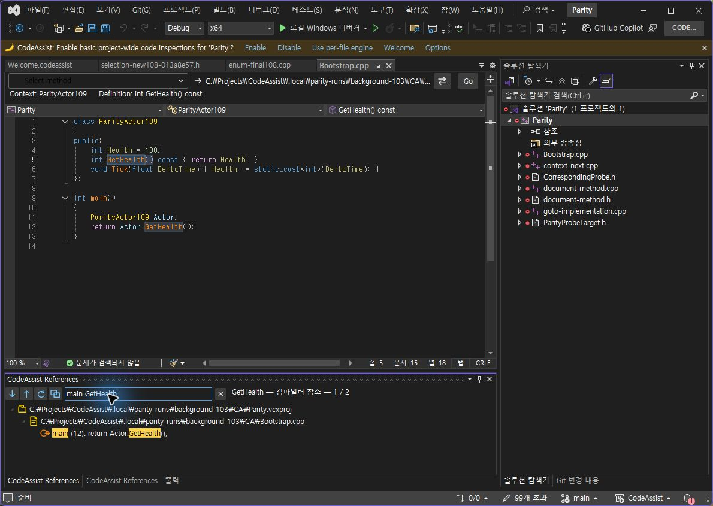
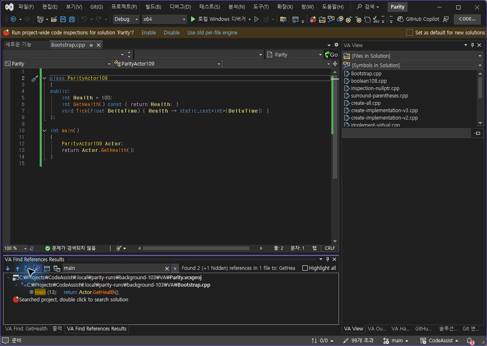

같은 7,578자 C++ 원문·1,200개 참조·8개 검색어, 7회 표본의 중앙값입니다. 모든 결과 캡션과 순서가 동일한지 먼저 검사했습니다. 0.0.115의 필터·문맥 알고리즘은 벤치마크 폴더에 보존했습니다.
| 측정 범위 | 기존 | 변경 |
|---|---|---|
| 8개 검색어 반복 필터 처리 | 261.553 ms | 0.762 ms — 99.71% 감소 |
| 준비 비용을 한 번 포함한 8개 필터 묶음 | 261.553 ms | 66.918 ms — 74.42% 감소 |
| 반복 필터 중 임시 할당 | 28,976,256 bytes | 174,528 bytes — 99.40% 감소 |
스냅샷 준비: 최초 150.504ms, 준비 7회 중앙값 66.155ms. 임시 할당 감소 수치는 준비 비용을 제외한 반복 필터 경로입니다. 프로세스 메모리 감소율이 아닙니다. 컴파일러 검색·DTE/COM·WPF 컨트롤 생성 및 레이아웃·IDE 시작은 이 벤치마크에 포함하지 않습니다. 앱 전체가 같은 배수로 빨라졌다고 해석하지 않습니다.
동일 원본의 GetHealth를 실제 Alt+Shift+F로 검색하고 main GetHealth 입력. 양쪽 호출 12행 한 개만 표시됐으며 더블클릭하면 12:15→12:24 GetHealth를 선택했습니다.

양쪽 파일 첫 줄에 빈 줄을 삽입·저장했습니다. main으로 필터만 변경할 때 양쪽 모두 기존 스냅샷의 12행을 유지했습니다. 새로 고침 후에는 이동한 13행으로 갱신됐습니다. VA 첫 좌표 클릭은 갱신을 일으키지 않아 제외하고 새 접근성 관찰의 Refresh 버튼으로 재실행했습니다.




복제는 main GetHealth와 표시 한 행을 보존했습니다. 복제만 새로 고쳐 13행으로 갱신한 뒤 원본으로 전환하면 원본은 이전 12행·기존 필터를 유지했습니다. 이 단독 확인은 VA 대조 표본 수에 추가하지 않습니다.


Core 테스트 325/325, VS2019·Modern 빌드 성공, 검사 프로필 설치 6/6 바이너리 해시 일치. 두 파일 원본 본문·저장 상태·SHA256 8A9D8AD69A16FB6813230BE6B2DB5A5717D5DEB55B426B092465777AF2884188 복구 확인. 시험 중 찍은 13행 화면은 당시 스냅샷입니다.
판정 및 계산 · 테스트 로그 · 설치 근거 · VA 선택 범위 · CA 선택 범위
XERJ: 사용 — v3에서 참조 창·문맥·필터 위치를 검색하고 현재 소스를 직접 확인했습니다. 전체 목표는 진행 중입니다.